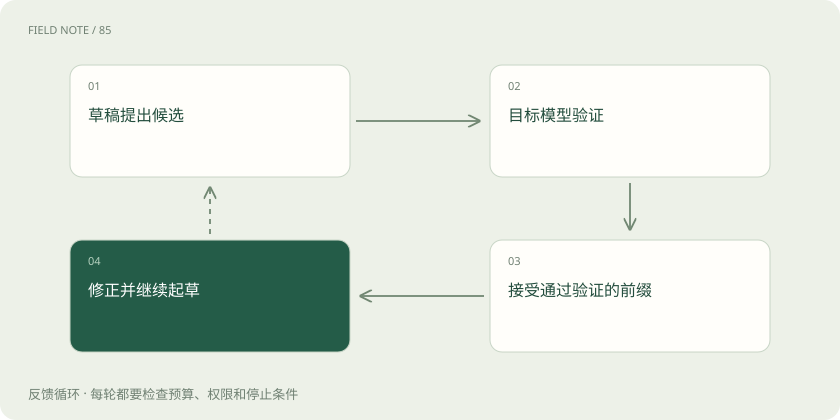

先说这篇在讲什么
假设你写报告时先让助手起草一小段，再由主编快速检查。有些内容可以接受，有些要退回重写。推测解码借用了类似思路，但是否能加速，要看起草是否便宜、被接受的内容有多少，以及检查开销。
先看一个具体例子
专业缩写较多的维修文本可能让通用草稿模型频繁猜错。选择更贴近领域的草稿机制，有机会提高接受率，但仍要扣除新增维护和加载成本。
遇到陌生概念，可以先读
打个比方，帮助理解
像助理先写草稿，主笔一次审阅多处，未通过的地方仍要重写。
这是帮助理解的比方，实际过程以正文说明为准。
一图看懂

为什么先起草可能更快
目标模型逐步生成每个 Token，可能需要多次计算。推测方法先准备若干候选，再安排目标模型检查。如果一段里多步都可接受，就可能少花一些等待时间。草稿可以来自较小模型，也可以由其他方式产生，具体实现不同。
检查不是简单问一句“你同意吗”
某些标准推测采样方法会结合接受与修正步骤，维持目标模型原本的采样分布。它不是随便让小模型写完，再让大模型说“差不多就行”。若实现改变了生成规则，就要另外检查结果是否仍符合预期。
草稿经常被退回，会怎样
如果草稿与目标模型差异很大，检查后频繁拒绝，起草花掉的时间就未必值得。起草太长也可能浪费。模型搭配、输入领域、硬件和批处理负载，都会影响收益，不能只看到“小模型快”就断言整体更快。
怎样理解报告里的加速数字
应在相同任务、输出条件和资源预算下比较，也要说明原本服务有多少并发。轻负载下省下的等待，不一定在拥挤时同样明显。推测解码主要改变计算安排，不是让模型突然多学到新的事实。
读完先记住这一句
起草快、目标模型也常接受，推测解码才更有机会省时间。
别踩这个误区
推测不是让小模型直接代答，不能只看接受率而忽略完整请求延迟。
想一想
接受率高是否足以证明推测解码更快？
不够，还要计算起草、验证、通信及回退的总时间。
关联阅读
资料与边界
本文为原创知识讲解。类比和图示经过简化；示例数字不代表实测或报价。整理日期：2026-11-04。文末列出对应技术的原始资料，具体功能与版本支持请以原文为准。
按完整目录逐篇阅读